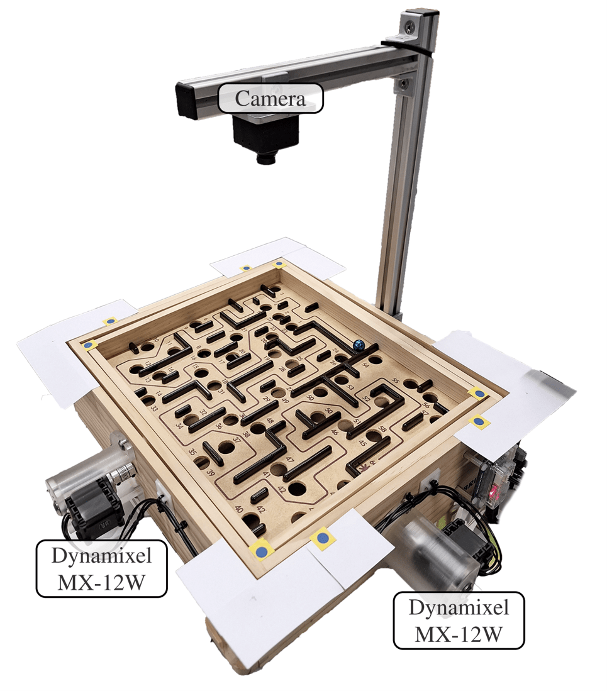

MSc RSCMSc Robotics, Systems & Control
For my Master's degree, I specialized in Robotics, Systems & Control at ETH Zurich, graduating with a GPA of 5.65 (See my Master's transcript for my grades and courses). Below is an overview of the projects I completed during my degree.
ETH Zurich - Theses
- Used Data-EnablEd Predictive Control (DeePC) algorithm to dynamically control traffic lights.
- Implemented a Data Pre-Conditioning strategy for DeePC, which led to a significant controller performance increase. Traffic congestion reduced by over 30%.
- Took part in the REAL initiative of NCCR Automation, where I regularly presented my findings to a group of graduate students. Learned how to present and communicate complex technical concepts effectively for different audiences.
- Read my Master thesis report here, and letter of recommendation from my supervisor here.
- Used imitation learning to train a motorized labyrinth game.
- Hands-on experience gained with machine learning libraries such as PyTorch and TensorFlow, and with ROS2.
- Read my Semester project report for more details.

ETH Zurich - Courses
- Knowledge acquired in: Kinematics, sensors and actuators for human-robot interaction systems, impedance, admittance and force control strategies for interaction, haptic rendering and human safety aspects.
- Implemented virtual wall with haptic paddle using an admittance controller programmed in LabVIEW. See the video below to see the virtual wall appear once the paddle reaches an angle of fifteen degrees.
- Knowledge acquired in: PID, LQR, Model Predictive Control (MPC), Reinforcement Learning, Data-Driven Control, Markov Decision Processes.
- Implemented autonomous rocket landing in gym simulation environment with Python. PID, MPC and Data-Enabled Predictive Control (DeePC) were implemented.
- Knowledge acquired in: Discrete planning and shortest path problems, steering methods, sampling-based methods, multi-agent planning, planning under uncertainty and collision checking.
- Implemented many mini-projects in Python. Use of optimization libraries like cvxpy. Multi-agent planning and control of multi-agent autonomous vehicles. The video shows the agents autonomously drive to their destinations. Re-planning happens when the agents are on a collision course.
- Knowledge acquired in: Dynamic Programming Algorithm, policy and value iteration, shortest path problems, infinite horizon problems, Bellman Equation, deterministic-continuous-time optimal control and Markov Decision Processes.
- Knowledge acquired in: Optimal control theory, optimization, theoretical properties of MPC, receding-horizon control MPC, tracking and offset-free control of constrained systems, robust MPC
- Implemented MPC for approaching stage of an orbital rendezvous maneuver of a satellite in programming project in Matlab.
- Knowledge acquired in: Image formation, filtering, feature extraction, multiple view geometry, dense reconstruction, tracking, image retrieval, event-based vision, visual-inertial odometry, Simultaneous Localization And Mapping (SLAM) and deep learning.
- Knowledge acquired in: Bayes' theorem, Bayesian tracking, Kalman filter, extended Kalman filter, particle filter, observer-based control.
- Implemented extended Kalman filter and particle filter in programming exercise in Python. Exercise was to estimate position, velocity, orientation and length of an autonomous vehicle from GPS, compass and tachometer measurements. Dealt with missing GPS signals for indoor settings and large uncertainty in compass measurements.
National University of Singapore - Courses
- Knowledge acquired in: State estimation, control systems theory, path planning and robot dynamics. Programming with Python and ROS.
- Implemented Theta* path planning, bi-directional motion control and spline trajectory generation in Python for TurtleBot3 robot group project.
- Implemented Extended Kalman Filter, finite state machine logic and PID controller in Python for hector drone group project.
- See video of turtlebot driving through maze below:
- Knowledge acquired in: System modeling, non-parametric and parametric system identification, simulation, controller design and implementation.
- Implemented project in Matlab.